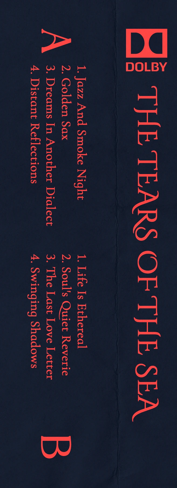
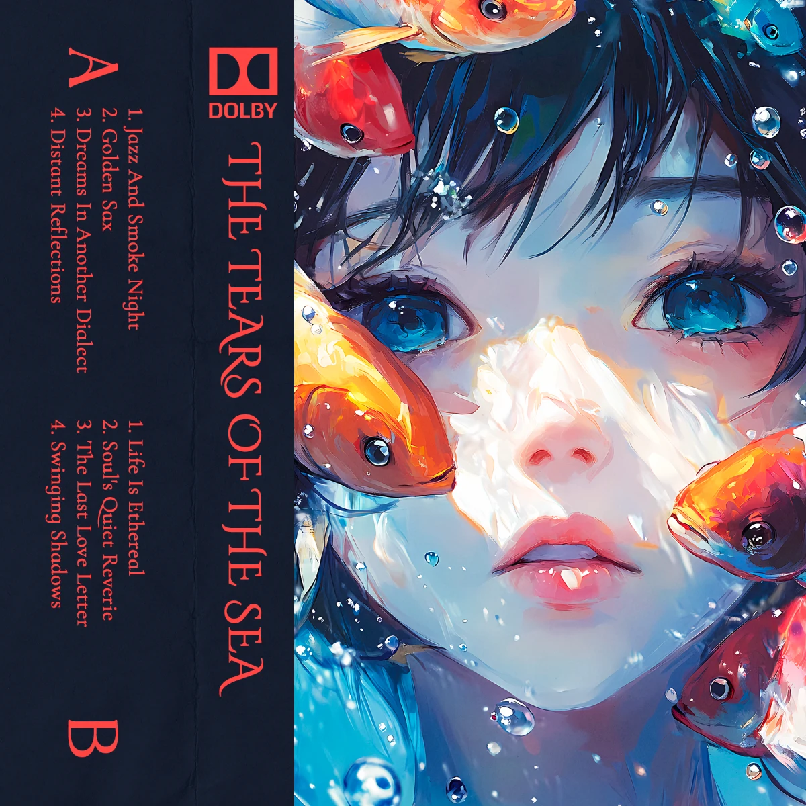

scroll to open

I wanted to do something ambient sounding but not slow.
Mabisyo · Chile · 1 August 2024The whole tape on Bandcamp
The Tears of the Sea
2024 · 8 tracksOpen on Bandcamp
Every tape is on Bandcamp